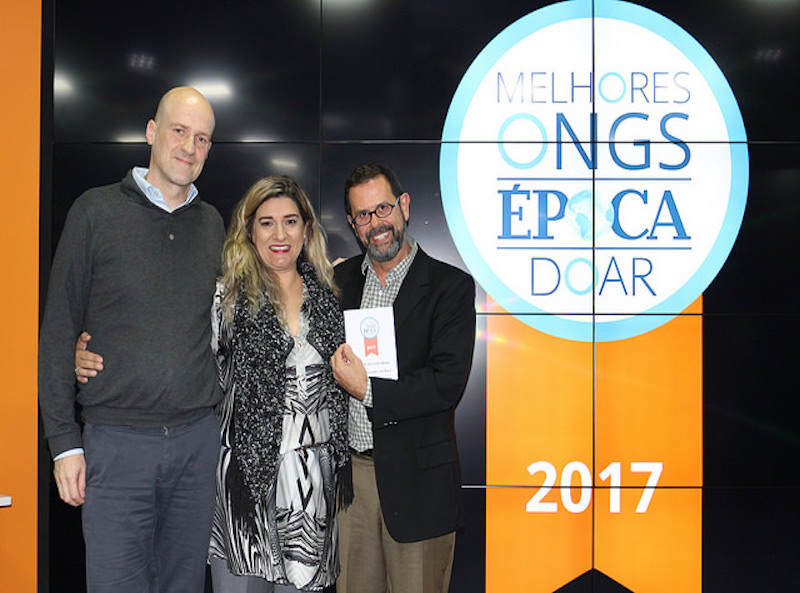

Conheça o segredo do sucesso da Melhor ONG do Brasil
19 de Outubro de 2017 às 07:00
Em agosto de 2017, a revista ÉPOCA e o Instituto Doar divulgaram a primeira edição da lista 100 Melhores ONGs do Brasil, e o grande destaque foi a Vocação. A instituição, que encabeçou a lista, trabalha com o desenvolvimento de pessoas da primeira infância até a colocação no mercado de trabalho.
Se a organização não parece familiar, talvez você a conheça pelo seu antigo nome: Ação Comunitária do Brasil – São Paulo. Fundada em 1967, a entidade sentiu que precisava se reinventar e, em 2015, passou a se chamar Vocação, “uma ONG moderna e atualizada às necessidades do Brasil contemporâneo”. Apesar desse “renascimento”, toda a experiência acumulada ao longo de meio século foi preservada, o que ajuda a explicar parte do sucesso da instituição.
“Sempre trabalhamos com uma exigência muito alta em termos de governança, dando muita atenção à prestação de contas aos nossos parceiros e à transparência. Eles nos cobram isso. Durante cinco décadas, aprimoramos esses processos”, diz a gerente de mobilização de recursos da Vocação, Anadelli Soares.
Outro ponto de destaque é a relação umbilical que a organização mantém com o setor privado. A ONG foi fundada e é tocada por empresários, que ajudam também em questões do dia a dia. Além disso, seus principais apoiadores são pessoas jurídicas. “Tenho certeza absoluta de que a aproximação com o empresariado ajudou na profissionalização precoce da organização, pois ele tem um nível muito alto de formalização de processos”, comenta Anadelli — ela mesma uma egressa do mercado financeiro.
Foi a mistura de experiência, aproximação com o setor privado e, consequente profissionalização, que fez com que a Vocação pontuasse bem nos cinco critérios analisados na publicação — causa e estratégia de atuação; representação e responsabilidade; gestão e planejamento; estratégia de financiamento e comunicação e prestação de contas —, ficando em primeiro lugar entre 1.560 ONGs avaliadas.
Experiência compartilhada
Mas não é preciso ter décadas de existência ou uma relação próxima com empresários para atingir o mesmo nível de excelência da Vocação, e a ONG faz questão de compartilhar com o setor o que aprendeu ao longo dos anos. “Criamos um sistema de medição de impacto social, que está em um livro. A publicação pode ser baixada por qualquer pessoa. Ela ajuda, por exemplo, a mostrar tantos resultados quantitativos quanto qualitativos para auxiliar na conversa com patrocinadores”, ressalta a gerente de mobilização de recursos.
Para garantir a transparência, por sua vez, a Vocação “desenvolveu ferramentas internas de prestação de contas, cujas informações são acreditadas por uma auditoria e os resultados, publicados no site. Além disso, qualquer apoiador pode visitar nossos projetos quando quiserem”, conta Anadelli.
Uma das estratégias de ação da ONG, que trabalha em várias frentes, foi criar uma carteira com projetos de curto, médio e longo prazo, atendendo aos anseios de seus diversos apoiadores empresariais.
Anadelli também pontua a importância de haver especialistas tocando os programas da instituição: "Há organizações com pessoas ótimas e com tino social. Mas onde estão aquelas com tino administrativo? É preciso também contar com gente que possua prática de gestão de projetos. Nós temos 150 funcionários, somos como uma pequena empresa."
Ela considera que todas as 100 ONGs do guia feito pelo Instituto Doar e ÉPOCA têm uma responsabilidade grande diante do terceiro setor brasileiro, composto por um universo de mais de 300 mil associações sem fins lucrativos, segundo o IBGE (Instituto Brasileiro de Geografia e Estatística).
"O recado que essas instituições passam é sobre a importância da profissionalização. O desafio é multiplicar essa capacidade de gestão e ajudar as outras organizações a manterem a casa em ordem."
Se a organização não parece familiar, talvez você a conheça pelo seu antigo nome: Ação Comunitária do Brasil – São Paulo. Fundada em 1967, a entidade sentiu que precisava se reinventar e, em 2015, passou a se chamar Vocação, “uma ONG moderna e atualizada às necessidades do Brasil contemporâneo”. Apesar desse “renascimento”, toda a experiência acumulada ao longo de meio século foi preservada, o que ajuda a explicar parte do sucesso da instituição.
“Sempre trabalhamos com uma exigência muito alta em termos de governança, dando muita atenção à prestação de contas aos nossos parceiros e à transparência. Eles nos cobram isso. Durante cinco décadas, aprimoramos esses processos”, diz a gerente de mobilização de recursos da Vocação, Anadelli Soares.
Outro ponto de destaque é a relação umbilical que a organização mantém com o setor privado. A ONG foi fundada e é tocada por empresários, que ajudam também em questões do dia a dia. Além disso, seus principais apoiadores são pessoas jurídicas. “Tenho certeza absoluta de que a aproximação com o empresariado ajudou na profissionalização precoce da organização, pois ele tem um nível muito alto de formalização de processos”, comenta Anadelli — ela mesma uma egressa do mercado financeiro.
Foi a mistura de experiência, aproximação com o setor privado e, consequente profissionalização, que fez com que a Vocação pontuasse bem nos cinco critérios analisados na publicação — causa e estratégia de atuação; representação e responsabilidade; gestão e planejamento; estratégia de financiamento e comunicação e prestação de contas —, ficando em primeiro lugar entre 1.560 ONGs avaliadas.
Experiência compartilhada
Mas não é preciso ter décadas de existência ou uma relação próxima com empresários para atingir o mesmo nível de excelência da Vocação, e a ONG faz questão de compartilhar com o setor o que aprendeu ao longo dos anos. “Criamos um sistema de medição de impacto social, que está em um livro. A publicação pode ser baixada por qualquer pessoa. Ela ajuda, por exemplo, a mostrar tantos resultados quantitativos quanto qualitativos para auxiliar na conversa com patrocinadores”, ressalta a gerente de mobilização de recursos.
Para garantir a transparência, por sua vez, a Vocação “desenvolveu ferramentas internas de prestação de contas, cujas informações são acreditadas por uma auditoria e os resultados, publicados no site. Além disso, qualquer apoiador pode visitar nossos projetos quando quiserem”, conta Anadelli.
Uma das estratégias de ação da ONG, que trabalha em várias frentes, foi criar uma carteira com projetos de curto, médio e longo prazo, atendendo aos anseios de seus diversos apoiadores empresariais.
Anadelli também pontua a importância de haver especialistas tocando os programas da instituição: "Há organizações com pessoas ótimas e com tino social. Mas onde estão aquelas com tino administrativo? É preciso também contar com gente que possua prática de gestão de projetos. Nós temos 150 funcionários, somos como uma pequena empresa."
Ela considera que todas as 100 ONGs do guia feito pelo Instituto Doar e ÉPOCA têm uma responsabilidade grande diante do terceiro setor brasileiro, composto por um universo de mais de 300 mil associações sem fins lucrativos, segundo o IBGE (Instituto Brasileiro de Geografia e Estatística).
"O recado que essas instituições passam é sobre a importância da profissionalização. O desafio é multiplicar essa capacidade de gestão e ajudar as outras organizações a manterem a casa em ordem."
Notícias mais populares
Contexto e tendências
Criado para tornar mais transparentes as parcerias entre a administração públic...
Profissional captador
A captação de recursos é fundamental para a sustentabilidade de uma organiza&cc...
Comunicação e relacionamento
Em um cenário de crise econômica, há um dilema familiar a muitas ONGs: como capt...